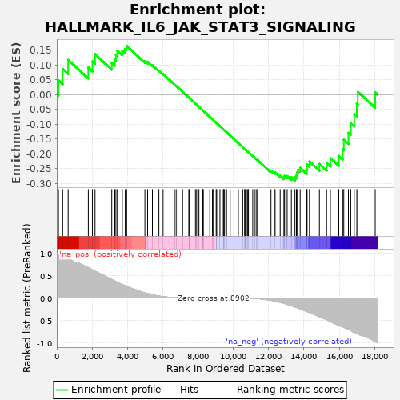
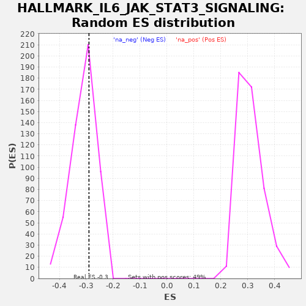

| | | Dataset | deseq_res_for_gsea |
| Phenotype | NoPhenotypeAvailable |
| Upregulated in class | na_neg |
| GeneSet | HALLMARK_IL6_JAK_STAT3_SIGNALING |
| Enrichment Score (ES) | -0.29007453 |
| Normalized Enrichment Score (NES) | -0.93343586 |
| Nominal p-value | 0.6328125 |
| FDR q-value | 0.88465524 |
| FWER p-Value | 1.0 |
Table: GSEA Results Summary

Fig 1: Enrichment plot: HALLMARK_IL6_JAK_STAT3_SIGNALING
Profile of the Running ES Score & Positions of GeneSet Members on the Rank Ordered List
| PROBE | GENE SYMBOL | GENE_TITLE | RANK IN GENE LIST | RANK METRIC SCORE | RUNNING ES | CORE ENRICHMENT | | 1 | CXCL11 | | | 93 | 0.978 | 0.0479 | No |
| 2 | HMOX1 | | | 331 | 0.948 | 0.0863 | No |
| 3 | PTPN11 | | | 643 | 0.883 | 0.1170 | No |
| 4 | CCL7 | | | 1785 | 0.677 | 0.0906 | No |
| 5 | CD36 | | | 2018 | 0.626 | 0.1118 | No |
| 6 | LTBR | | | 2165 | 0.595 | 0.1360 | No |
| 7 | IL2RA | | | 3113 | 0.411 | 0.1060 | No |
| 8 | TGFB1 | | | 3286 | 0.377 | 0.1169 | No |
| 9 | HAX1 | | | 3351 | 0.363 | 0.1331 | No |
| 10 | IL1B | | | 3433 | 0.344 | 0.1473 | No |
| 11 | TNFRSF1A | | | 3709 | 0.299 | 0.1483 | No |
| 12 | IRF9 | | | 3878 | 0.274 | 0.1539 | No |
| 13 | TNFRSF1B | | | 3956 | 0.260 | 0.1637 | No |
| 14 | CBL | | | 4990 | 0.114 | 0.1128 | No |
| 15 | SOCS1 | | | 5143 | 0.098 | 0.1097 | No |
| 16 | CSF2 | | | 5414 | 0.071 | 0.0986 | No |
| 17 | ITGA4 | | | 5783 | 0.041 | 0.0805 | No |
| 18 | CD44 | | | 6019 | 0.029 | 0.0691 | No |
| 19 | JUN | | | 6664 | 0.006 | 0.0338 | No |
| 20 | IL1R1 | | | 6760 | 0.005 | 0.0289 | No |
| 21 | PTPN1 | | | 6862 | 0.004 | 0.0235 | No |
| 22 | CXCL3 | | | 7123 | 0.002 | 0.0092 | No |
| 23 | A2M | | | 7482 | 0.000 | -0.0106 | No |
| 24 | CD9 | | | 7488 | 0.000 | -0.0109 | No |
| 25 | MYD88 | | | 7853 | 0.000 | -0.0310 | No |
| 26 | SOCS3 | | | 7921 | 0.000 | -0.0347 | No |
| 27 | LTB | | | 8004 | 0.000 | -0.0392 | No |
| 28 | IL17RA | | | 8050 | 0.000 | -0.0417 | No |
| 29 | GRB2 | | | 8264 | 0.000 | -0.0535 | No |
| 30 | TNFRSF21 | | | 8266 | 0.000 | -0.0535 | No |
| 31 | OSMR | | | 8299 | 0.000 | -0.0553 | No |
| 32 | ITGB3 | | | 8665 | 0.000 | -0.0755 | No |
| 33 | LEPR | | | 8815 | 0.000 | -0.0837 | No |
| 34 | CNTFR | | | 8878 | 0.000 | -0.0872 | No |
| 35 | PDGFC | | | 8887 | 0.000 | -0.0876 | No |
| 36 | IL17RB | | | 8898 | 0.000 | -0.0882 | No |
| 37 | CD38 | | | 9026 | -0.000 | -0.0952 | No |
| 38 | INHBE | | | 9059 | -0.000 | -0.0970 | No |
| 39 | IL15RA | | | 9240 | -0.000 | -0.1069 | No |
| 40 | IL10RB | | | 9430 | -0.000 | -0.1174 | No |
| 41 | IL4R | | | 9457 | -0.000 | -0.1188 | No |
| 42 | IL2RG | | | 9501 | -0.000 | -0.1212 | No |
| 43 | IL6ST | | | 9614 | -0.000 | -0.1274 | No |
| 44 | CRLF2 | | | 9820 | -0.000 | -0.1387 | No |
| 45 | IFNGR2 | | | 10034 | -0.000 | -0.1505 | No |
| 46 | IRF1 | | | 10283 | -0.000 | -0.1642 | No |
| 47 | STAT2 | | | 10529 | -0.001 | -0.1777 | No |
| 48 | ACVR1B | | | 10640 | -0.001 | -0.1837 | No |
| 49 | IL12RB1 | | | 10653 | -0.001 | -0.1843 | No |
| 50 | IL18R1 | | | 10688 | -0.001 | -0.1861 | No |
| 51 | IFNAR1 | | | 10740 | -0.002 | -0.1889 | No |
| 52 | TYK2 | | | 10813 | -0.002 | -0.1927 | No |
| 53 | ACVRL1 | | | 10856 | -0.003 | -0.1949 | No |
| 54 | EBI3 | | | 11097 | -0.006 | -0.2079 | No |
| 55 | IL6 | | | 11196 | -0.008 | -0.2129 | No |
| 56 | CSF2RA | | | 11290 | -0.010 | -0.2174 | No |
| 57 | BAK1 | | | 11364 | -0.012 | -0.2208 | No |
| 58 | IL3RA | | | 12078 | -0.047 | -0.2577 | No |
| 59 | REG1A | | | 12132 | -0.051 | -0.2578 | No |
| 60 | IL1R2 | | | 12321 | -0.065 | -0.2647 | No |
| 61 | CSF1 | | | 12365 | -0.068 | -0.2634 | No |
| 62 | IL9R | | | 12652 | -0.095 | -0.2741 | No |
| 63 | TNFRSF12A | | | 12862 | -0.118 | -0.2792 | No |
| 64 | IL7 | | | 12902 | -0.123 | -0.2747 | No |
| 65 | PIM1 | | | 13047 | -0.139 | -0.2751 | No |
| 66 | FAS | | | 13286 | -0.172 | -0.2790 | No |
| 67 | PTPN2 | | | 13488 | -0.198 | -0.2793 | Yes |
| 68 | STAT1 | | | 13571 | -0.209 | -0.2725 | Yes |
| 69 | STAT3 | | | 13606 | -0.214 | -0.2627 | Yes |
| 70 | CXCL10 | | | 13661 | -0.223 | -0.2536 | Yes |
| 71 | CCR1 | | | 13784 | -0.241 | -0.2473 | Yes |
| 72 | CXCL9 | | | 14165 | -0.302 | -0.2520 | Yes |
| 73 | CXCL13 | | | 14171 | -0.302 | -0.2358 | Yes |
| 74 | PF4 | | | 14310 | -0.321 | -0.2260 | Yes |
| 75 | IFNGR1 | | | 14873 | -0.416 | -0.2345 | Yes |
| 76 | TLR2 | | | 15280 | -0.485 | -0.2306 | Yes |
| 77 | CSF3R | | | 15497 | -0.524 | -0.2141 | Yes |
| 78 | DNTT | | | 15973 | -0.607 | -0.2074 | Yes |
| 79 | CD14 | | | 16191 | -0.639 | -0.1848 | Yes |
| 80 | IL13RA1 | | | 16255 | -0.652 | -0.1529 | Yes |
| 81 | PIK3R5 | | | 16516 | -0.700 | -0.1292 | Yes |
| 82 | MAP3K8 | | | 16649 | -0.727 | -0.0971 | Yes |
| 83 | STAM2 | | | 16847 | -0.767 | -0.0663 | Yes |
| 84 | TNF | | | 16992 | -0.794 | -0.0312 | Yes |
| 85 | PLA2G2A | | | 17047 | -0.803 | 0.0094 | Yes |
| 86 | CSF2RB | | | 18034 | -0.968 | 0.0074 | Yes |
Table: GSEA details [plain text format]

Fig 2: HALLMARK_IL6_JAK_STAT3_SIGNALING: Random ES distribution
Gene set null distribution of ES for HALLMARK_IL6_JAK_STAT3_SIGNALING